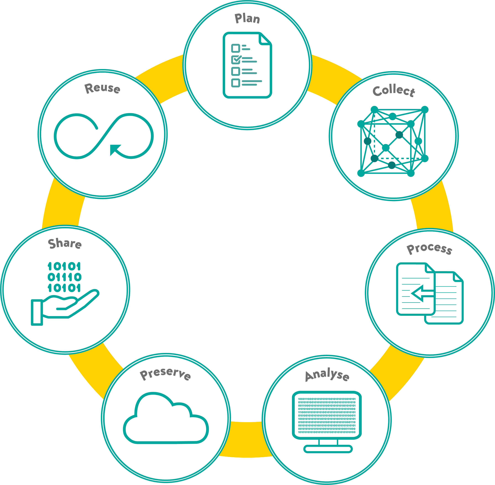

How to write a research data management plan
Henry Royce Institute, University of Manchester
2024-06-27
What is a data management plan?
A research data management plan (DMP)
is a living document
can be updated at any point, as required
What is a data management plan?
A DMP will outline all the stages of a project’s data lifecycle before data collection begins
- how the data will be collected,
- stored,
- protected,
- shared,
- licensing rights to the data
The research data lifecycle

Why write a data management plan?
Organisation reasons
- It is required
- By your funders
- By your school/faculty/department
- Will help with project reporting to funders
Why write a data management plan?
Personal reasons
- Helps:
- Formalise a process
- Assess what is needed
- Identify areas that require attention
- Enforce consistency in data management
- Being consistent with your data management will lead to fast retrieval
- Adapt a pre-existing DMP for a similar project
- Refer to the DMP when writing your thesis
- Guide the project management of your project ⇛ timely thesis completion
When to write a Research DMP?
{kind=link}
Plan
Gather your resources
- Guidance and policy documents including:
- Funder guidance
- Institutional guidance
- Private funder guidance (e.g. industrial sponsor)
- Decide on your DMP workflow
- When to update
- One vs. several DMPs
- Seek reviewers for your DMP
Plan
Consider your project
- Pre-existing data
- Research group data management methods
- Does the group use a particular storage system?
- How does my group share files internally and externally?
- How does my group collaborate?
- How does my group manage physical data storage, i.e. samples
- Institutional data management resources
- Is the data sensitive to a defence or commercial project?
Collect
- What type of data?
- Physical (Don’t forget samples are data too!)
- What types of samples?
- Digital
- What file formats?
- Physical (Don’t forget samples are data too!)
Collect
- How?
- Physical
- Received from partner?
- Created in lab?
- Digital
- What pieces of data acquisition equipment?
- How data will be generated from simulations?
- Physical
Collect
- Where will the data be acquired from?
- Novel?
- Publicly available?
- Data from group?
- Data from partners?
Collect
- What Software do I need?
- Do I need specialised software to acquire and analyse the data?
- What type of file formats does the software I need export to?
- Can I convert acquired data to open file formats?
- How will I acquire this software?
- Free and Open Source? Paid license?
- What support will I need from institutional resources (people)?
- What software will I be using to track samples?
- Sample tracking software?
- What software will I be using to track experiments?
- Electronic laboratory notebooks?
Process
- Does data need to be transferred between locations?
- How will data be organised?
- Sensible directory naming conventions
- Sensible file naming conventions
- Does data come in proprietary file formats?
- Does it need to be converted to an open file format?
- Will it be easily accessible by
analysis programmes
?
- Will data need to be cleaned before analysis?
How will the processing step be documented?
Analyse
Well documented == reproducible
Preserve
- How will the data be stored temporarily, short-term, long-term?
- How long will the data be retained for after the end of the project?
- Will the data be archived?
- Are there any data destruction procedures that need to be followed?
- Public v Institutional (or Subscription) & Open v Subscription-based Repositories
Share
Two aspects to sharing research and data:
- Internal to the project
- Perhaps external to your institution
- Publishing
Share
Consider:
- Who owns the intellectual property rights to the data?
- Partner policy
- Funder policy
Will determine:
- Who will has rights to reuse it?
- If the data will remain with the research group
- How the data can be shared?
- Where the data can be shared?
Share
Repositories:
- Which repository will make my data more visible? (Findable to the community)
- Is there a specific repository to desposit to in accordance with my funder policy?
- Could my data be made more Accessible Interoperable Reusable?
- How do I want to license my data/code?
Share
Open access:
- Diamond
- Gold
- Green
Financial aspect:
- What will I do if I can’t publish Gold Open Access?
Tips
Weave RDM practices into your everyday workflow
Not just an afterthought or check-marking activity
Even as a one-person lab
It is part of your work and responsibilities
Seniors need to encourage, support and promote RDM
Ask if your research group has a nominated data management champion
Remember
It is a living document
can change to reflect changes in the direction of your project
Resources
References
This work by Stavrina Dimosthenous is licensed under CC BY-NC-SA 4.0